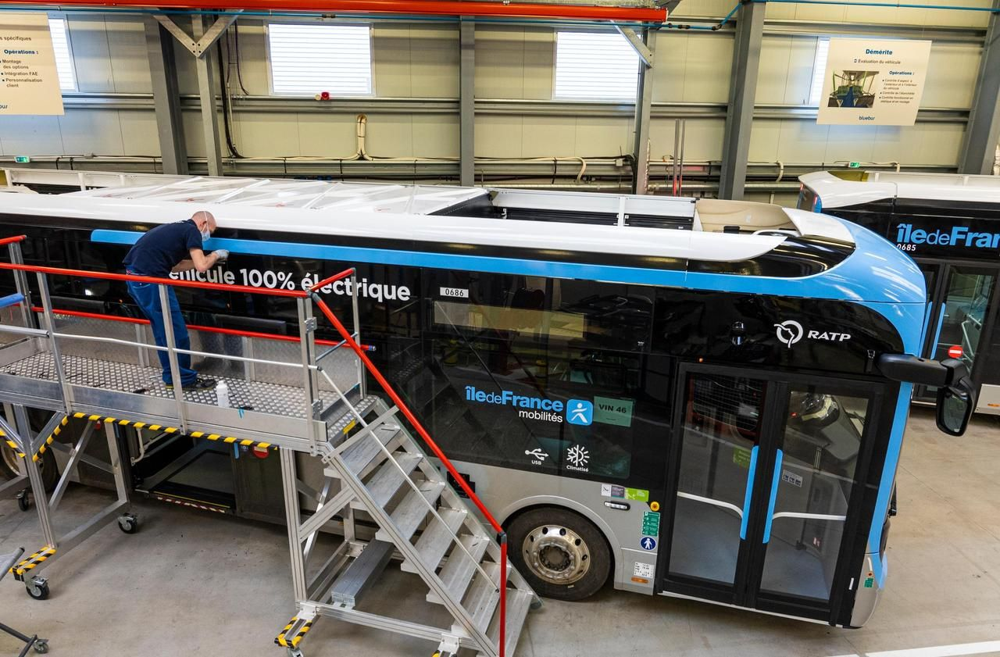
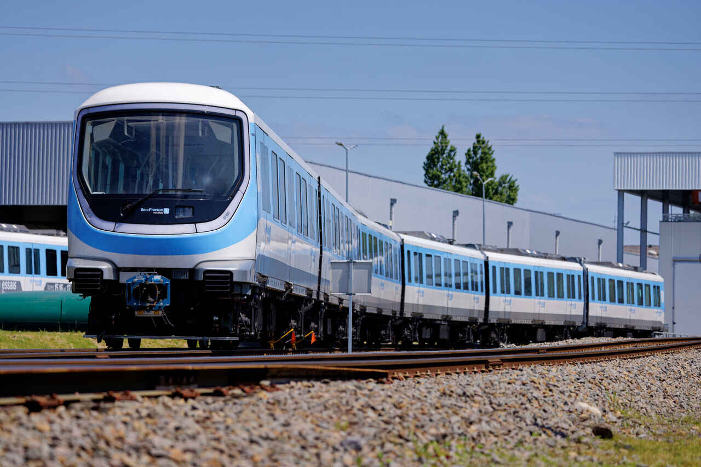

Futurs.Transports
Durant les Jeux Olympiques 2024 de Paris, les transports en communs ont joué un rôle essentiel dans l’acheminement des spectateurs vers les lieux d’épreuves. Cette augmentation de voyageurs aurait dû avoir un impact significatif sur la création de multiple gaz à effet de serre. Cependant la RATP, avec la mise en place de différents dispositifs, a ainsi réussi à restreindre son empreinte écologique.
Transformation et action durable

Depuis 2014, la RATP a commencé à lentement convertir leur bus à essence en bus électrique et biométhane (le biométhane est un gaz renouvelable issu de matières organiques naturelles et d’un phénomène naturel nommé la digestion anaérobie) qui sont bien plus écologiques. Cela a permis une réduction de 50% des émissions de Gaz à Effet de Serre.
La modernisation des quais se fait progressivement durant les années, on y installe des nouvelles lumières LED consommant 2 fois moins d’électricité qu’auparavant mais qui ont également une durée de vie accru, passant d’une durée de vie de 3 ans à 5 ans.
Certains Métro bénéficient d’un chauffage naturel grâce à la captation de chaleur provenant de sources géothermiques proches. La chaleur des transports en service est également mise en avant, elle est un chauffage initialement perdu qui est utilisé pour permettre de chauffer les bâtiments proches se trouvant au-dessus.
Les déchets produits par la RATP sont presque entièrement transformés dans le but de réduire encore plus leur empreinte écologique. Ces ressources, qu’on supposait être des déchets, sont utilisées dans différents secteurs comme le recyclage ou la création d’énergie. L’entreprise a également mis en place des systèmes pour réemployer l’eau qu’elle consomme Elle investit également dans de nouveaux moyens énergétiques comme le solaire, l’éolien ou la biomasse dans l’optique de répondre à leur besoin énergétique.
Développement du réseau de transport

L’efficacité des moyens de transports de la RATP ainsi que leur empreinte écologique basse, encouragent leur développement. De nombreux projet visant à connecter de plus en plus les banlieues entre elle ainsi qu’avec Paris.
On a notamment des extensions du:
• T1 de Asnières vers Colombes
• T1 de Noisy-le-Sec vers Val de Fontenay
• T7 de Athis-Mons vers Juvisny-sur-Orge
• T13 de Saint-Germain vers Achères
• RER E de Saint-Lazare jusqu’à Mantes-la-Jolie
Des nouvelles lignes de transport :
• Métro 15 reliant les plusieurs communes aux alentours de Paris
• Métro 16 : Saint-Denis Pleyel jusqu’à Noisy-Champ
• Métro 17 : Saint-Denis Pleyel jusqu’à Le Mesnil Amelot
• Métro 18 reliant d’Aéroport d’Orly à Versailles Chantiers
• Téléphérique C1 reliant Créteil à Villeneuve-Saint-Georges